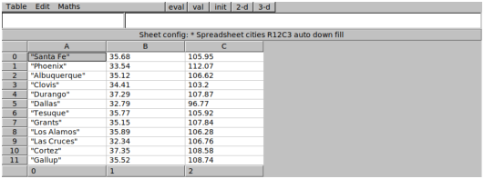
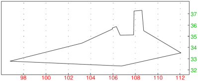

16.3.5 Simulated annealing minimization
The simulated_annealing
command attempts to find a point in a search space for which
a real-valued cost function is minimized, by using the method of simulated annealing.
simulated_annealing requires that giac is linked to GSL.
-
simulated_annealing takes five mandatory arguments and one or two optional arguments:
-
x0, an initial configuration, which may be any object.
- costfunc, the cost function which takes a configuration and returns a real number.
- distfunc, the distance function which takes two configurations and returns the
distance between them as a real number.
- stepfunc, the step function which takes a configuration c
and optionally a real number
maxstep and returns a random configuration c′ which is a neighbor of c.
If stepfunc accepts the maxstep argument, it can be used to limit the distance between
c and c′.
- csparam, a vector [k,T0,µ,Tmin] which defines the cooling schedule
parameters, where k is a Boltzmann constant, T0 is the initial temperature, µ is the damping
factor for temperature and Tmin is the minimal temperature.
- Optionally, iterparam, a vector [n,N] of positive integers where n is the
number of points tried before stepping and N is the number of iterations for each value of T.
By default, n=10 and N=100.
- Optionally, maxstep, a real number which limits the step size from above.
If this parameter is set, then stepfunc must accept two arguments and maxstep
will be passed as the second argument whenever calling stepfunc.
By default, this parameter is unset.
- simulated_annealing(x0,costfunc,distfunc,stepfunc,csparam ⟨,iterparam,maxstep ⟩)
returns the best configuration found in the context of cost function
minimization. The method of simulated annealing gives good results in avoiding local minima, so
you usually get the global cost minimum.
- Simulated annealing is essentially a random walk in the search space.
The probability of taking a step is determined by the Boltzmann distribution
if Ei+1>Ei, and p=1 when Ei+1≤ Ei. Here, Ei and Ei+1 are the configuration
energies (costs). If the new energy is higher, a step is always taken, but it may also be taken if
the new energy is lower then Ei (the probability of that event drops with T).
The temperature T is initally set to a high value and lowered very slightly
after the prescribed number of iterations N by using the formula T← T/µ. Here µ is
usually slightly larger than 1.
The cooling process stops when T reaches its minimum Tmin.
- The functions costfunc, distfunc and stepfunc should return
undef to raise an error. In that case, simulated_annealing will terminate
immediately with an error message.
- Simulated annealing is frequently used to solve combinatorial optimization problems.
Examples
(The following examples are adapted from GSL documentation, see
here.)
In the first example we find the global minimum of a damped sine wave functionf(x)=e−(x−1)2sin(8x).
This function has many local minima but only a single global minimum in the interval [1.0,1.5].
We start from the point x0=15.5, which is several local minima away from the solution.
The following parameter values are used:
k=1, T0=0.008, µ=1.003, Tmin=2× 10−6,
n=20, N=100 and maxstep=1.
| simulated_annealing(15.5,x->exp(-(x-1)^2)*sin(8x),(x,y)->abs(x-y),(x,m)->rand(x-m,x+m),
[1.0,0.008,1.003,2.0e-6],[20,100],1.0) |
In the second example we solve an instance of traveling salesman problem with 12 cities.We enter the cities alongside their latitude and longitude coordinates in an Xcas table cell
which we associate with the variable cities (see Figure 16.1).

| Figure 16.1: Cities used in the TSP example |
We attempt to find the shortest tour which visits each city exactly once. A tour is represented by a
permutation of cities. In total, there are 12!=479001600 possible configurations.
First we need to create a distance matrix which stores the distances between each two cities
because each distance may be called for multiple times.
We do so by applying the function dist_km which computes the shortest distance
(in kilometres) between two cities on a spherical model of Earth of radius R=6375 km.
| dist_km:=proc(latitude1,longitude1,latitude2,longitude2)
local sla1,cla1,slo1,clo1,sla2,cla2,slo2,clo2,x1,x2,y1,y2,z1,z2;
sla1,cla1:=sin(latitude1*pi/180),cos(latitude1*pi/180);
slo1,clo1:=sin(longitude1*pi/180),cos(longitude1*pi/180);
sla2,cla2:=sin(latitude2*pi/180),cos(latitude2*pi/180);
slo2,clo2:=sin(longitude2*pi/180),cos(longitude2*pi/180);
x1,y1,z1:=cla1*clo1,cla1*slo1,sla1;
x2,y2,z2:=cla2*clo2,cla2*slo2,sla2;
return evalf(6375*acos(x1*x2+y1*y2+z1*z2));
end:; |
Now we create the distance matrix by using the following commands.
| nc:=length(cities):;
dist_mat:=matrix(nc,nc,(j,k)->dist_km(cities[j,1],cities[j,2],cities[k,1],cities[k,2])):; |
We generate a neighbor of a given tour by exchanging two random consecutive cities.
The distance between two tours (configurations) is simply the Hamming distance.
The cost of a tour is equal to its length (in kilometres).
The three functions we require are thus entered as follows:
| costf:=proc(xp)
local j,d;
assume(j,symbol);
d:=0;
for j from 0 to nc-1 do
d+=dist_mat[xp[j],xp[irem(j+1,nc)]];
od;
return d;
end:; |
| stepf:=proc(xp)
local j,jnext,tmp,xpmod;
j:=rand(nc);
jnext:=irem(j+1,nc);
tmp:=xp[j];
xpmod:=xp;
xpmod[j]:=xpmod[jnext];
xpmod[jnext]:=tmp;
return xpmod;
end:; |
| distf:=proc(xp,yp)
return hamdist(xp,yp);
end:; |
The initial tour is a random permutation of cities.
A good tour can be found by the following command (we use the default values
of n and N).
| best:=simulated_annealing(x0,costf,distf,stepf,[1.0,5000.0,1.005,5.0e-1]) |
|
| |
| ⎡
⎣ | 7,2,8,6,0,3,5,9,1,11,10,4 | ⎤
⎦ |
| | | | | | | | | | |
|
Finally, we visualize the tour.
We swap latitudes and longitudes for a more appropriate layout.
| polygon(sortperm(colswap(subMat(cities,0,1,11,2),0,1),best)) |
